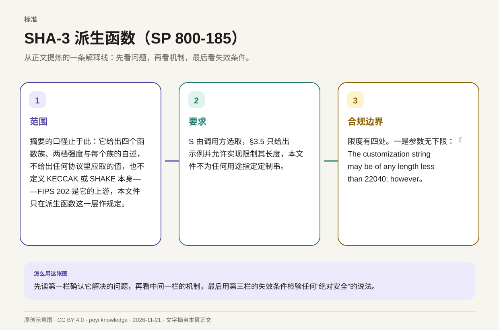
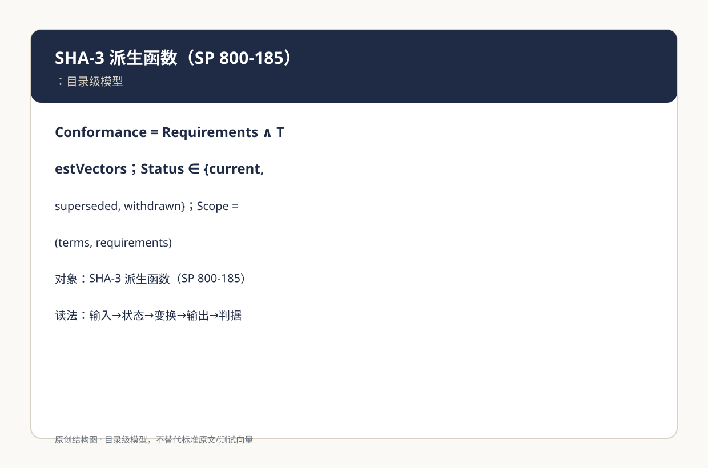

原理与机制
标准：SHA-3 派生函数：cSHAKE、KMAC、TupleHash 与 ParallelHash（SP 800-185）（SHA-3 Derived Functions: cSHAKE, KMAC, TupleHash and ParallelHash (SP 800-185)）。摘要首句给出文件性质与对象：「This Recommendation specifies four types of SHA-3-derived functions: cSHAKE, KMAC, TupleHash, and ParallelHash, each defined for a 128- and 256-bit security strength.」随后逐个自述：「cSHAKE is a customizable variant of the SHAKE function, as defined in Federal Information Processing Standard (FIPS) 202.」、「KMAC (for KECCAK Message Authentication Code) is a variable-length message authentication code algorithm based on KECCAK; it can also be used as a pseudorandom function.」、「TupleHash is a variable-length hash function designed to hash tuples of input strings without trivial collisions.」与「ParallelHash is a variable-length hash function that can hash very long messages in parallel.」它规定的是四个函数族及其 128/256 两档强度，全部派生自 FIPS 202。摘要的口径止于此：它给出四个函数族、两档强度与每个族的自述，不给出任何协议里应取的值，也不定义 KECCAK 或 SHAKE 本身——FIPS 202 是它的上游，本文件只在派生函数这一层作规定。

为什么重要
§1 交代缺口在域分离：「Domain separation ensures that different named functions (such as SHA3-512 and SHAKE128) will be unrelated.」再把定制化的作用讲清：「Customization is analogous to strong typing in a programming language; such customization makes it extremely unlikely that computing one function with two different customization strings will yield the same answer.」其余三族要补的是基本函数没有的能力：「It then defines three additional SHA-3-derived functions, in Secs.4 through 6, that provide new functionality not directly available from the more basic functions.」风险因此被写成同一件事的两面：没有域分离，不同用途的输出可能彼此相关；有了 N 与 S，两次计算可被当作互不相干的函数。
应用与实例
分工写在编号章节：函数名不归用户，§3.4 说 N「This is intended for use by NIST in defining SHA-3-derived functions, and should only be set to values defined by NIST」，并直接约束用户：「Users of cSHAKE should not make up their own names--that kind of customization is the purpose of the customization string S, to be discussed in Sec.3.5.」§3.5 把选择权交给调用方：「The cSHAKE function also includes an input string (S) to allow users to customize their use of the function.」四族一律提供 128 与 256 两档：「cSHAKE, KMAC, TupleHash, and ParallelHash are all defined for two claimed security strengths: 128 bits and 256 bits.」两处的层级都是建议级：N 只应取 NIST 定义的值（原文 should only be set），名称也不建议由用户自创（原文 should not make up their own names）；S 由调用方选取，§3.5 只给出示例并允许实现限制其长度，本文件不为任何用途指定定制串。

边界与攻击面
限度有四处。一是参数无下限：「The customization string may be of any length less than 22040; however, implementations may restrict the length of S that they will accept.」（留存文本把 2 的 2040 次方抽成了 22040：同文件 right_encode 的有效性条件也印成同样丢掉上标的 0 x < 22040，可见上标在提取时丢失；此处照抄抽取件原样并如此说明）取值仍由协议或应用自己决定，本文件不指定用途。二是越界的代价：「Nonstandard values of N could cause interoperability problems with future NIST-defined functions.」三是 cSHAKE 自身的性质缺口：「Note that cSHAKE does not share this property.」「For q1< q2, cSHAKE(X, q1, N, S) is a prefix of cSHAKE(X, q2, N, S).」即短输出只是长输出的前缀，不像另外三族那样换长度即换函数。四是实现边界：「An implementation of cSHAKE may reasonably support only input strings and output lengths that are whole bytes; if so, a fractional-byte input string or a request for an output length that is not a multiple of 8 would result in an error.」另外，「Appendix B--Hashing into a Range (Informative)」标题自标为非规范性附录。
历史与背景
扉页首行为「NIST Special Publication 800-185」，作者与部门两行连读为「John Kelsey Shu-jen Chang Ray Perlner Computer Security Division Information Technology Laboratory」，DOI 行是「This publication is available free of charge from:」，DOI 10.6028/NIST.SP.800-185。Authority 段的引用行给出日期与页数：「Natl.Inst.Stand.Technol.Spec.Publ.800-185, 32 pages (December 2016)」，同段限定适用面：「such standards and guidelines shall not apply to national security systems without the express approval of appropriate federal officials exercising policy authority over such systems」。关键词行整行列出：「authentication; cryptography; cSHAKE; customizable SHAKE function; hash function; information security; integrity; KECCAK; KMAC; message authentication code; parallel hashing; ParallelHash; PRF; pseudorandom function; SHA-3; SHAKE; tuple hashing; TupleHash.」。致谢页点名 KECCAK 团队的评审者：「The authors thank the KECCAK team members: Guido Bertoni, Joan Daemen」，另有一句「The authors also thank their colleagues for reviewing drafts of this document and contributing to its development.」以上各条合起来是这份文件的门板事实：出版物编号、三位作者与所在部门、免费获取的 DOI 行、带页数的正式引用行，以及致谢点名的外部评审者；文本未声明取代任何早期版本。
逐步示例与核验
形式模型与复算步骤
[S=\min_i S_i,\quad S_i\in{\text{密钥强度},\text{分组安全},\text{实现安全}}]
SHA-3 派生函数：cSHAKE、KMAC、TupleHash 与 ParallelHash（SP 800-185）的公开参数、密钥/随机数与消息；变量说明：S 为综合安全强度；各分量取最小值，不能只看密钥位数。1.读取标准规定的密钥/分组/模式参数。2.按标准表换算等效强度。3.取最弱分量作为系统强度。边界：公式只覆盖已登记的参数与假设；参数取值、标准版本和实现细节仍以来源为准。
参考出处
- Wikipedia search entry for SHA-3 派生函数：cSHAKE、KMAC、TupleHash 与 ParallelHash（SP 800-185）. https://zh.wikipedia.org/w/index.php?search=SHA-3%20%E6%B4%BE%E7%94%9F%E5%87%BD%E6%95%B0%EF%BC%9AcSHAKE%E3%80%81KMAC%E3%80%81TupleHash%20%E4%B8%8E%20ParallelHash%EF%BC%88SP%20800-185%EF%BC%89
- Handbook of Applied Cryptography (Menezes, van Oorschot, Vanstone). https://www.cacr.math.uwaterloo.ca/hac/